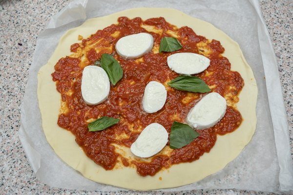
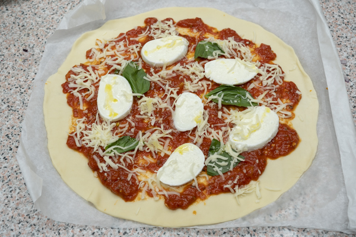
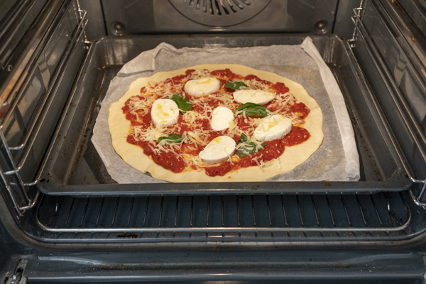

La pizza margarita es una de las más sencillas y más ricas que tiene la gastronomía italiana, hoy vamos a aprender a preparar una de las pizzas más famosas de la cocina italiana. Se llama pizza Margarita en honor a Margarita de Saboya que en el año 1889 decidieron agasajar con una pizza sencilla y deliciosa en una pizzería napolitana.
- 1 masa de pizza
- 2 o 3 cucharadas soperas de salsa de tomate
- Mozzarella fior di latte
- Queso parmesano (opcional)
- Aceite de oliva
- Albahaca fresca
Ingredientes:
Cómo hacer pizza margarita
1- Comenzamos extendiendo la masa de pizza en la encimera.
2- En ella vamos a extender la salsa de tomate que hemos hecho y encima la mozzarella fior di latte. la mozzarella si la tenemos con líquido la tenemos que escurrir porque si no puede estropear la pizza.

3. Coronamos con un poco de albahaca fresca, un chorrito de aceite de oliva y podemos poner también queso parmesano ya que en muchas recetas de muchas pizzerías le suelen poner un poco y le da un toque genial.

4- Horneamos la pizza margarita a la máxima potencia que permita vuestro horno, en mi caso son 250 grados, en la parte baja de la misma y si puede estar pegada al suelo del horno mucho mejor ya que va a salir la masa perfecta.

5- La horneamos durante unos 8 o 10 minutos, depende del grosor de la masa que tengamos y cuando veamos que está lista por debajo, la sacamos y la servimos.